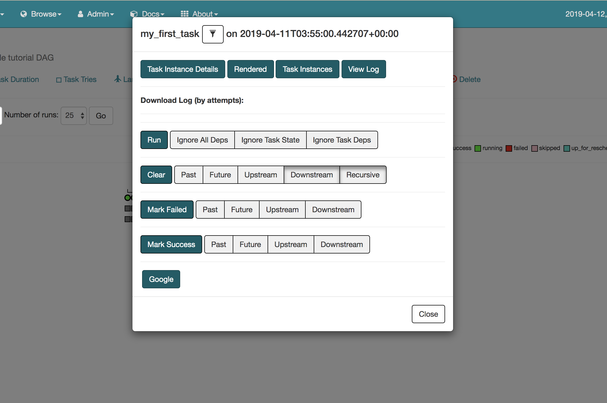

Define an operator extra link¶
For each operator, you can define its own extra links that can redirect users to external systems. The extra link buttons will be available on the task page:
The following code shows how to add extra links to an operator:
from airflow.models.baseoperator import BaseOperator, BaseOperatorLink
from airflow.utils.decorators import apply_defaults
class GoogleLink(BaseOperatorLink):
name = 'Google'
def get_link(self, operator, dttm):
return "https://www.google.com"
class MyFirstOperator(BaseOperator):
operator_extra_links = (
GoogleLink(),
)
@apply_defaults
def __init__(self, *args, **kwargs):
super(MyFirstOperator, self).__init__(*args, **kwargs)
def execute(self, context):
self.log.info("Hello World!")
You can also add a global operator extra link that will be available to all the operators through an airflow plugin. Learn more about it in the plugin example.
Add or override Links to Existing Operators¶
You can also add (or override) an extra link to an existing operators through an Airflow plugin.
For example, the following Airflow plugin will add an Operator Link on all
tasks using GoogleCloudStorageToS3Operator operator.
Adding Operator Links to Existing Operators
plugins/extra_link.py:
from airflow.plugins_manager import AirflowPlugin
from airflow.models.baseoperator import BaseOperatorLink
from airflow.operators.gcs_to_s3 import GoogleCloudStorageToS3Operator
class S3LogLink(BaseOperatorLink):
name = 'S3'
# Add list of all the operators to which you want to add this OperatorLinks
# Example: operators = [GoogleCloudStorageToS3Operator, GoogleCloudStorageToBigQueryOperator]
operators = [GoogleCloudStorageToS3Operator]
def get_link(self, operator, dttm):
return 'https://s3.amazonaws.com/airflow-logs/{dag_id}/{task_id}/{execution_date}'.format(
dag_id=operator.dag_id,
task_id=operator.task_id,
execution_date=dttm,
)
# Defining the plugin class
class AirflowExtraLinkPlugin(AirflowPlugin):
name = "extra_link_plugin"
operator_extra_links = [S3LogLink(), ]
Overriding Operator Links of Existing Operators:
It is also possible to replace a built in link on an operator via a Plugin. For example
BigQueryOperator includes a link to the GCP
console, but if we wanted to change that link we could:
from airflow.plugins_manager import AirflowPlugin
from airflow.models.baseoperator import BaseOperatorLink
from airflow.gcp.operators.bigquery import BigQueryOperator
# Change from https to http just to display the override
BIGQUERY_JOB_DETAILS_LINK_FMT = 'http://console.cloud.google.com/bigquery?j={job_id}'
class BigQueryConsoleLink(BaseOperatorLink):
"""
Helper class for constructing BigQuery link.
"""
name = 'BigQuery Console'
operators = [BigQueryOperator]
def get_link(self, operator, dttm):
ti = TaskInstance(task=operator, execution_date=dttm)
job_id = ti.xcom_pull(task_ids=operator.task_id, key='job_id')
return BIGQUERY_JOB_DETAILS_LINK_FMT.format(job_id=job_id) if job_id else ''
# Defining the plugin class
class AirflowExtraLinkPlugin(AirflowPlugin):
name = "extra_link_plugin"
operator_extra_links = [BigQueryConsoleLink(), ]